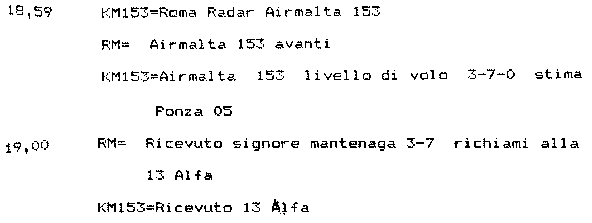

L'incredibile equivoco dell'ALFA
Come sono nate tutte le bufale su questo insignificante volo? Ci ha pensato l'
A.G., che prende in seria considerazione il KM153 (v. "
5. Le rogatorie maltesi e le tracce di sorvoli di C130 libici verso l’Italia." a fondo pag. 348):
Esso è stato preso in considerazione nelle indagini per quelle ragioni che hanno fatto supporre un errore di obiettivo e cioè che il reale bersaglio di un presunto attacco fosse l'aereo maltese e non quello italiano.
Il motivo che ha indotto l'A.G. a formulare una supposizione così strampalata è tanto banale quanto errato (v. il seguito della frase appena citata):
In effetti in una comunicazione delle 18.45 il KM153 riferì a Roma-Ciampino di stimare il punto Alpha ai '55 ovvero di prevedere di essere a 18.55, dopo dieci minuti, su quella posizione che è un punto dell'aerovia Ambra 13, la stessa che stava percorrendo il DC9 Itavia. Questo velivolo sarà sul punto Alpha ai '56, un minuto dopo lo stimato dell'aereo delle linee maltesi, e precipiterà a circa tre minuti di distanza, per l'esattezza darà l'ultima risposta transponder a 19.59.45.
La frase sottolineata in rosso (errata) è quella che darà origine a tutta l'incredibile serie di frottole sul KM153.
Da quello che si può leggere, infatti, l'A.G. ritiene (sbagliando) che il KM153 stesse dando a Roma lo stimato per l'A-13 ALFA, ma è una certezza che le cose stanno diversamente (v. oltre).
Non è possibile affermare con sicurezza la ragione che ha spinto l'A.G. a commettere un errore così grossolano, ma sembrerebbe che l'A.G. possa aver creduto che l'unico punto ALFA si trovasse solo lungo l'aerovia A-13. Forse ignorava che quasi tutte le aerovie avevano i punti ALFA, BRAVO, ecc.
In ogni caso, l'errore porta l'A.G. a credere che (v. "
TITOLO 2 - L'istruttoria dal 27 luglio 90 al 31 dicembre 97" a pag. 184):
La traccia in questione [Air Malta KM153, ndr]
sarebbe dovuta transitare su Ponza alle ore 18.50 circa ed alle ore 19.00 trovarsi nei pressi del luogo del disastro. In realtà il volo accusa un ritardo di circa 13.30 minuti e nel momento in cui si sarebbe dovuto trovare all’altezza di Ponza navigava invece al largo dell’Argentario.
ma questa deduzione è palesemente errata, poiché nasce dall'equivoco consistente nel confondere il punto ALFA dell'aerovia R-46 o A-1 col punto A-13 ALFA (situato lungo l'aerovia A-13). Infatti, la comunicazione delle 18:45 a cui si riferisce l'A.G. è: "
Air Malta 153 Roma, 153 stima il punto ALFA ai 55" (v. precedente paragrafo "
Comunicazioni T/B/T"). Piloti e controllori sanno bene di quale punto ALFA stanno parlando grazie alla loro competenza, ma questo, evidentemente, non vale per l'A.G.
Quindi, quei 13 minuti e mezzo di cui parla l'A.G. non rappresentano un ritardo, ma è un tempo privo di qualunque significato, dal momento che deriva dall'incredibile cantonata presa dall'A.G. nel ritenere che il KM153 stesse riferendosi all'A-13 ALFA.
Non è nemmeno chiaro come sia stato calcolato quel "ritardo", poiché il KM153 transita all'altezza dell'A-13 ALFA alle 19:07:23 (passandogli 7,1 nm a est), quando, secondo l'A.G. avrebbe dovuto trovarsi in quel punto alle 18:55. Per cui, il ritardo calcolato sarebbe 12
m23
s, non 13
m30
s. Alle 19:08:30 (18:55 + 13
m30
s) il KM153 si trova oltre 9 nm a sud del punto A-13 ALFA e oltre 19 nm a nord del punto del disastro.
L'A.G., dunque, dopo aver preso l'abbaglio dei 13 minuti e mezzo di ritardo, afferma (ovviamente sbagliando) che il KM153 si sarebbe dovuto trovare nel luogo del disastro alle 19:00, cioè allo stesso orario dell'IH870, che, quindi, sarebbe stato abbattuto per errore al posto del KM153, ma per rendersi conto di quanto sia facile che una frottola se ne tiri dietro un'altra, si può leggere la pagina "
L'IH870 è stato abbattuto di notte al posto del KM153", dalla quale dovrebbe risultare lampante quanto fosse impossibile confondere i due aerei.

Fortunatamente, l'orario stimato per Ponza ce lo dice lo stesso KM153: 19:05, ben 15 minuti dopo rispetto alle strampalate supposizioni dell'A.G.
Tra l'altro, questa comunicazione con Roma Radar avrebbe dovuto rendere evidente all'A.G. che se il KM153 stima Ponza alle 19:05, non poteva stimare l'A-13 ALFA (43 nm dopo Ponza) 10 minuti prima di arrivare a Ponza. Doveva essere chiaro che il punto ALFA nominato dal KM153 era situato da qualche altra parte.
Il reale ritardo del KM153 sulla tabella di marcia è ben diverso.
Gli orari programmati ed effettivi relativi a vari voli Air Malta sono elencati nel documento "
WP001949_003.DOC"
fonte. Il volo che c'interessa è il n° 17.
La partenza da Heathrow era pianificata per le 15:10, ma è avvenuta alle 16:58 (1
h48
m di ritardo). L'arrivo a Luqa era pianificato per le 18:15, ma è avvenuto alle 19:57 (1
h42
m di ritardo). È chiaro, quindi, che il KM153 ha mantenuto un ritardo di circa un'ora e tre quarti lungo tutto il tragitto.
La cartina mostra la rotta del KM153 ottenuta dall'estrattore 4 del radar Selenia.
Siccome i radar Marconi e Selenia avevano un disallineamento leggermente diverso rispetto al nord geografico, la posizione dei plot non è accurata come per il Marconi, ma questo non costituisce un problema, poiché lo scopo della cartina è fornire il valore di alcuni parametri di volo del KM153 (e in questo, il Selenia è da preferire per i plot meno fluttuanti). Tali informazioni vengono mostrate dall'etichetta che compare portando il puntatore del mouse sopra ai plot. Compaiono la velocità al suolo (GS), la
rotta vera (TRK), la velocità rispetto all'aria (TAS) e la prua vera (HDG).
Il procedimento usato per il calcolo della velocità è descritto nel paragrafo "
Presenza del MiG-23 → 1) Analisi della velocità di volo". Si tratta di un procedimento piuttosto complesso che dà origine ad un'incertezza nella velocità calcolata; tale incertezza è indicata con "±". Ad esempio,
576,4 ± 2,3 indica che la velocità al suolo è compresa tra 574,1 kn e 578,7 kn con una confidenza del 90% (in realtà il discorso è piuttosto complesso; chi volesse approfondire può leggere "
Intervallo di confidenza"). Lo stesso procedimento è usato anche per il calcolo della rotta.
TAS e HDG, invece, vengono calcolate da GS e TRK attraverso il
modello meteo usato per calcolare il vento presente lungo la rotta dell'Air Malta.
I punti A-1 B e A-1 D risultano situati rispettivamente a circa 72 nm e a 108 nm da ELB e sono ricavati dai riporti di posizione del Flyjet 56 (v. "
Volo in A-14 → PD-808 e LG461").
Muovendo il puntatore del mouse sui plot, si può appurare la posizione del KM153 nel momento della comunicazione delle 18:45 e quella raggiunta 10 minuti dopo (lo stimato per l'A-1 ALFA, che doveva trovarsi tra i punti B e D).
La velocità rispetto al suolo è elevatissima grazie al fortissimo vento in coda. Durante gli ultimi due minuti che precedono lo stimato per l'ALFA (comunicazione delle 18:45) è pari a circa 590 kn.
Considerando che alle 18:45 l'aereo si trova a 203 nm dall'A-13 ALFA, se il calcolo dello stimato lo avesse fatto l'
INS, questo avrebbe calcolato 203 / 590 x 60 = 20,64 minuti.
Se il calcolo fosse stato eseguito dai piloti, questi avrebbero tenuto conto del fatto che, piegando verso sud, la componente in coda del vento sarebbe stata molto inferiore di quella attuale; avrebbero potuto considerare, ad esempio, 560 kn, stimando l'A-13 ALFA dopo circa 203 / 560 x 60 = 21,75 minuti, cioè "ai 07" (19:07).
In ogni caso, per impiegarci 10 minuti (come crede l'A.G.) ci voleva un Concorde!
Errare è umano e anche i piloti possono sbagliare, ma pensare che possano commettere un errore di oltre 10 minuti su 20 è troppo. Se poi l'aereo aveva un INS (cosa molto probabile), l'errore poteva essere di 1 o 2 minuti al massimo, a causa della variazione della componente in coda del vento, dal momento che i calcoli li fa l'INS tenendo conto del vento.
Non può esserci alcun dubbio sul fatto che il KM153
certamente non parlava dell'A-13 ALFA. Il dubbio può esserci, in mancanza di una cartina dell'epoca, tra il punto ALFA della R-46 e quello dell'A-1, ma di certo non quello dell'A-13.
Anche nel caso in cui non risulti chiaro a quale ALFA il KM153 si stesse riferendo o in caso d'errore da parte dei piloti (o dell'INS) nel calcolare lo stimato, la comunicazione delle 18:59 rende evidente che
il ritardo calcolato dall'A.G. è del tutto privo di fondamento.
A causa di questo madornale errore, ancora oggi ci trasciniamo dietro tutta la serie di frottole su questo "povero" volo che, oltre a non avere niente a che fare col MiG-23, è anche del tutto irrilevante per la strage di Ustica.
Nel caso in cui si volessero fare ulteriori analisi, possono tornare utili i grafici seguenti.
Il primo mostra la rotta vera (cioè quella rispetto al nord geografico) "nominale" (con tratto più spesso) e l'intervallo entro cui dovrebbe essere compresa la reale rotta. L'incertezza è esplicitata più chiaramente dal grafico arancione (come detto, l'incertezza deriva dal procedimento usato per fare i calcoli). Sono anche riportati alcuni punti significativi lungo la rotta.
Il secondo grafico è concettualmente uguale al primo, ma prende in considerazione la velocità al suolo e la relativa incertezza.
Nel terzo grafico vediamo la velocità rispetto all'aria e la prua vera (rispetto al nord geografico).
Nel quarto, infine, è riportata la velocità e la direzione del vento lungo la rotta del KM153.
Non solo il KM153 non ha niente a che vedere col MiG-23, ma è anche del tutto irrilevante per la strage di Ustica.
 Leggiamo anche la richiesta d'identificazione da parte del controllore, prontamente soddisfatta dal primo ufficiale del KM153 premendo il pulsante "IDENT" nel pannello del transponder, come facilmente verificabile muovendo il puntatore del mouse sui plot blu nella precedente cartina (presenza dell'impulso SPI per una trentina di secondi dalle 18:47).
Leggiamo anche la richiesta d'identificazione da parte del controllore, prontamente soddisfatta dal primo ufficiale del KM153 premendo il pulsante "IDENT" nel pannello del transponder, come facilmente verificabile muovendo il puntatore del mouse sui plot blu nella precedente cartina (presenza dell'impulso SPI per una trentina di secondi dalle 18:47). La partenza strumentale da Heathrow (dischetto rosso) prevedeva l'ingresso in aerovia in corrispondenza delle radioassistenze di Midhurst, Mayfield o Seaford.
La partenza strumentale da Heathrow (dischetto rosso) prevedeva l'ingresso in aerovia in corrispondenza delle radioassistenze di Midhurst, Mayfield o Seaford. Un esempio dei giorni nostri (12 maggio 2021) è mostrato da quest'immagine tratta da flightradar24, in cui un Airbus A320 del volo KM101 va da Heathrow a Luqa passando molto vicino alla rotta percorsa circa quarant'anni prima dal KM153.
Un esempio dei giorni nostri (12 maggio 2021) è mostrato da quest'immagine tratta da flightradar24, in cui un Airbus A320 del volo KM101 va da Heathrow a Luqa passando molto vicino alla rotta percorsa circa quarant'anni prima dal KM153.